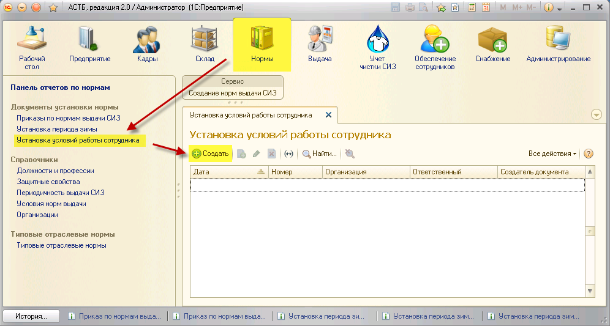

В принятых ранее нормах представлены условия работы для всех сотрудников, однако в некоторых случаях может потребоваться отключение того или иного условия. Такое может произойти, когда нормами было установлено, что сотрудники, принятые на определенную должность, должны получать дополнительные СИЗ при выполнении работ по заданному условию (например, «При выполнении сталелитейных работ»), но некоторые из них этих работ не выполняют. Таким образом, им полагается избыточное количество СИЗ, на которое впоследствии будет сформирована потребность. Чтобы избежать подобных ситуаций, в ПК АСТБ 2.0 существует возможность ручной установки условий работы для сотрудников.
Для этого зайдите в раздел «Нормы», документ «Установка условий работы сотрудника» и нажмите кнопку «Создать».

В открывшемся окне выберите организацию и нужного сотрудника. Затем нажмите кнопку «Заполнить», после чего в табличной части отобразятся все условия норм для заданного сотрудника, по всем занимаемым им должностям с указанием подразделением. Снимите флажок с того условия, по которому сотрудник не будет в дальнейшем производить работ. Нажмите кнопку «Провести и закрыть».
После проведения документа потребность на данного сотрудника по отключенному условию формироваться не будет.
Командная панель формы «Приказ по нормам выдачи СИЗ» содержит следующие вспомогательные кнопки:
 – Создать новый элемент копированием предыдущего;
– Создать новый элемент копированием предыдущего;
 – Удалить текущий элемент;
– Удалить текущий элемент;
 – Переместить текущий элемент вверх;
– Переместить текущий элемент вверх;
 – Переместить текущий элемент вниз;
– Переместить текущий элемент вниз;
 – Установить флажки;
– Установить флажки;
 – Снять флажки.
– Снять флажки.